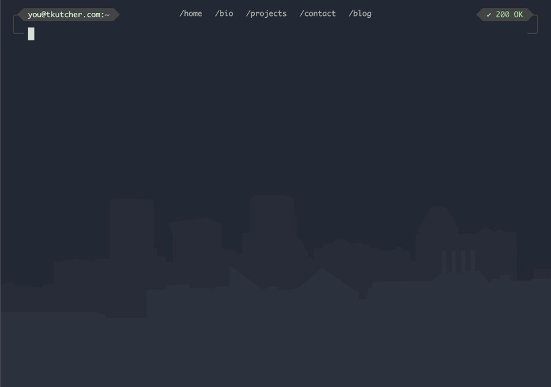
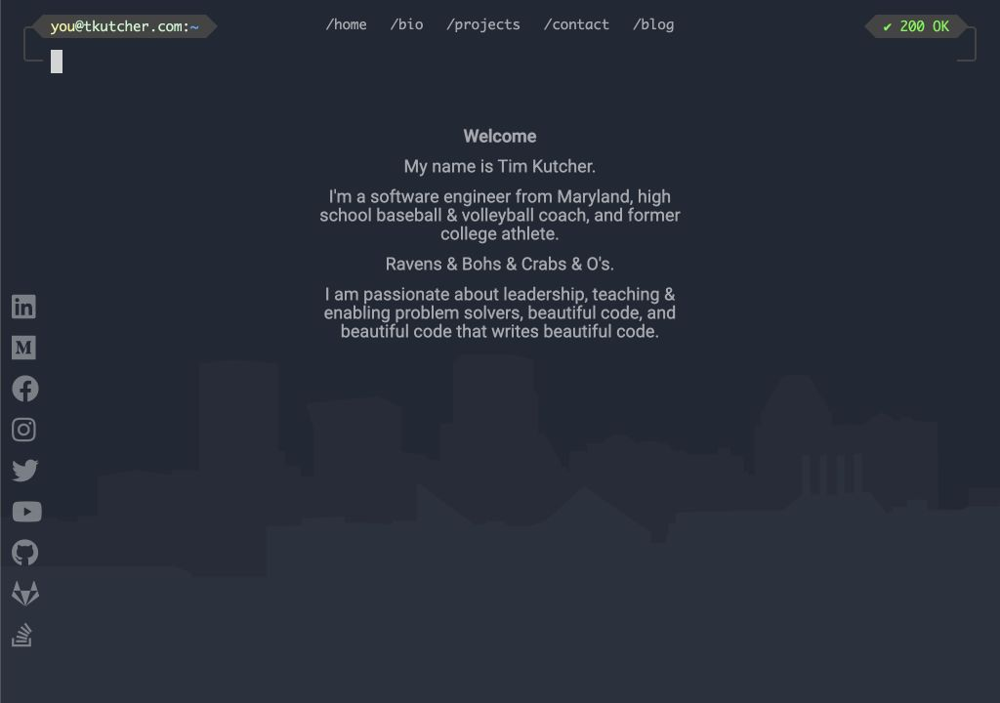
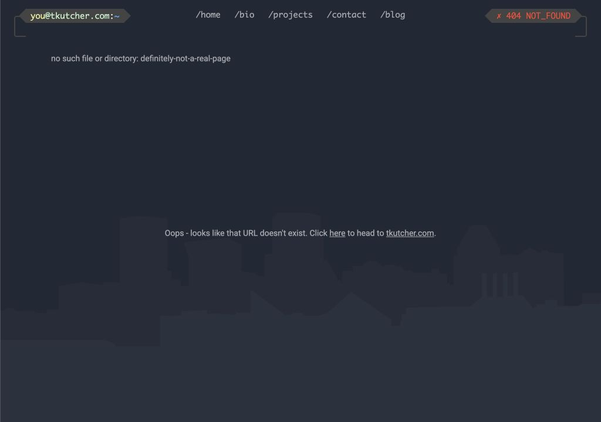

Design notes · Personal website · v1
The original tkutcher.com.
I spent a lot of time working in a terminal, so I used that as the visual system for the entire site: the prompt, path-like navigation, startup sequence, and HTTP status messages.


